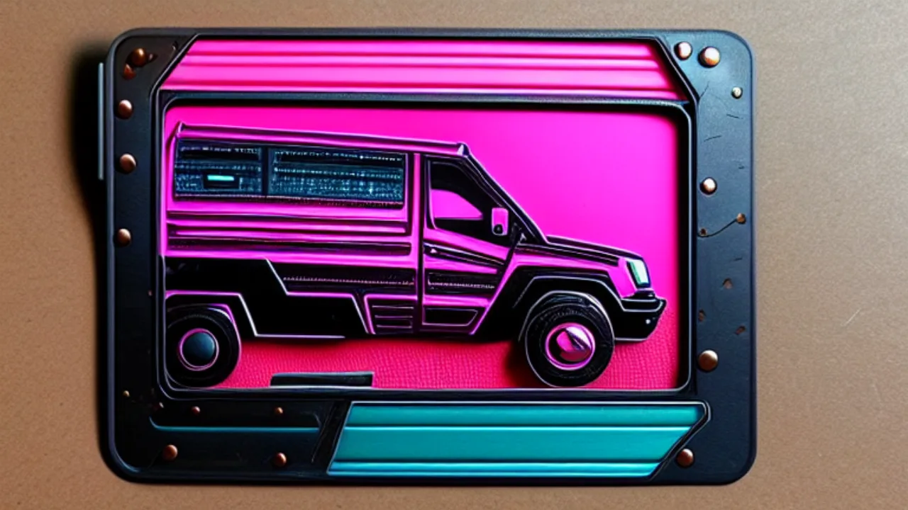

The file was valid. The transition was still bad.
A decodable 9.96-second file with measured endpoints feels like success, right up until you watch it at full speed. Verification by decoder is not verification by eye, and we now do both.
The build diary of a fully local podcast factory — music, voices, covers and video, all generated on a Mac and orchestrated by n8n. 43 posts, reconstructed honestly from the project's records: what we tried, what broke, and what the evidence actually supports. The drafts are retrospective, ordered by post date and slot id — not exact historical chronology.
 Video probes
Video probes
Latest · Part 43 of 43
If endpoint conditioning produces reversals and a final snap, maybe motion wants a trajectory or a shape to follow rather than two destination images. What motion control would change, and what it has to prove first.
A decodable 9.96-second file with measured endpoints feels like success, right up until you watch it at full speed. Verification by decoder is not verification by eye, and we now do both.
First-and-last-frame conditioning got the fog to both endpoints. The journey between them reversed direction and snapped into place like a compressed spring. The endpoints matched; the physics did not.

MigrationMoving an archive turns one uncertain route into hundreds. The pilot episode exists to absorb that uncertainty once, cheaply, before the other few hundred get their turn.
Building a speech-verification loop before pointing it at real speech sounds backwards. The alternative is debugging the model, transcription, speaker identity and retries in one noisy failure. Fixtures first.
 Local models
Local models
One long copy sounded like the obvious answer to a 26.762 GB problem. The new sync verifies every file against the content-addressed store, and blocks the video stage until all four files check out.
When the model transfer failed, we had a satisfying theory: the machine had fallen over. The evidence was more careful than we were. Unreachable is a network statement, not a mortality verdict.
ComfyUI had memory-mapped the 14.6 GB text encoder over the network. The share disappeared underneath it, and macOS killed Python with SIGBUS rather than an error. What the records show, and the fix that followed.
The longer-sequence experiment hid two different bets in one accounting table: a single prompt carrying the whole action, versus two continuous sections joined afterwards. Both aimed at length; only in the ledger did they look the same.
 Cutover
Cutover
We edited the workflow, watched it save, and assumed the scheduler had received the news. In n8n 2.x a manual run uses the draft, a scheduled run uses the published version, and the difference stayed invisible until the 3am run failed.
Publication succeeded, then cleanup threw: a cleanup node had been re-enabled by the cutover while pointing at a music node that no longer existed. Nobody noticed for days, which is the interesting part.
Music and video had been two remote assumptions wearing one coat. Music needed a local YuE2 path with a stable contract; video needed native LTX-2.5 in its own isolated ComfyUI. We stopped pretending it was one problem.
 Music & audio
Music & audio
Style tags looked like a control panel. They were a suggestion box taped to a disconnected radio. The renderer ran with guidance at its default of 1.0, which ignores the tags completely.
Music came from ComfyUI on port 8189. Final media was collected by ComfyUI on port 8188. Both were running perfectly. You can see where this is going.
 Music & audio
Music & audio
A readable 2.3 MB WAV, exactly 11.999 seconds long, produced as asked. And a workflow looking for a different file entirely. On what a branch finishing actually means.
Case E looked like it had lost its inputs. The expected execution-named image pair was not where the filename convention suggested. It was in the published episode, which is a better place for it, once you know to look.
 Video probes
Video probes
A duration experiment is very good at producing a number that belongs to a different subject. Five real podcast cases were locked, hash-verified and documented before the limit moved an inch.
 Video probes
Video probes
Case C, the overgrown ruins with slow fog and a locked camera, made a 9.96-second transition end to end. What passed, what the measurement actually covered, and what it does not yet prove.
 Video probes
Video probes
The envelope notes said a clean render could reach 20 seconds. Our question was different: could real podcast prompts make a usable ten-second transition? Different question, different setup, different answer.
The workflow was designed to run with nobody watching. The NAS mount succeeded only after a human clicked an approval button. Useful evidence, and the exact opposite of unattended.
A hostname gave us a machine. It did not tell us which road the bytes would take. Ethernet, wireless LAN and Tailscale can all answer the same name, and preflight now checks them separately.
 Cutover
Cutover
We kept a remembered address for the MacBook and one for the NAS, and a workflow that treated the notes as law. Then a request went to the NAS and got ECONNREFUSED, because the service lived on the laptop. Discovery beat memory.
 Cutover
Cutover
The workflow used to discover a missing dependency at the exact moment an expensive branch needed it. Now a deterministic capability manifest checks routes, services and models up front, before anyone renders anything.
We corrected the saved graph and ran it. During the run, the editor autosave restored an older draft over our correction, stale port configuration and all. Our own editor ambushed us.
Two workflow branches finished flawlessly, the join waited for both, and the final download met ECONNREFUSED on port 8188. The service had moved port between the readiness check and the download.
 Cutover
Cutover
The check was not wrong. It simply ran before the state it was protecting existed: two branches converged, one switched ComfyUI profiles, and the final step asked the wrong endpoint for the right job.
An old n8n execution had done expensive work and was missing one small step. Retry looked like the cheap option. The word carries a comforting promise that history does not keep.
Run 2415 was refused because ComfyUI already belonged to run 2414. Read it quickly and it looks like a lock failure. It was a lock success, and we were the ones who had failed to queue politely.
A 20 to 40 second brief meets a hard 12-second cap: the song never stood a chance of ending properly. Letting the intro finish on its own terms improved the music immediately.
 Music & audio
Music & audio
The song generator read "Intro song", "[Intro]" and a parenthesised note about filtered synth bass, and sang all of it. A full accounting of what leaked into the lyrics, and where each piece belongs.
Two kinds of trouble arrived at once that month: ComfyUI refusing to be interrupted, and the profile-switch path rejecting our credentials. Keeping them as separate diagnoses was the only way through.
We wanted the podcast to sound like two people talking, not one narrator wearing a second hat. The fix was format, not labels: a conversational structure, a rotating cast, and a lot of iteration.
 Music & audio
Music & audio
Five article sets, five writing ideas, two generations each: fifty songs, none of them a hit single. The point was comparing approaches fairly, and the multiplication was the easy part.
One publication path was carrying two very different cargoes: tiny page metadata and podcast-sized binaries. Splitting them made both sides simpler, and the git history stopped gaining weight.
 Workflow
Workflow
The live lookup gave a neat, dangerous answer: one workflow, short history. The dated backup held the older identities, versions and executions the live search had stopped returning. Forensics lives in backups.
 Workflow
Workflow
Which workflow actually did the work? The name is not an identity: one opaque ID answered to two different names across the records, and only the ID was telling the truth.
 Video probes
Video probes
The design generated an opening still, asked a vision model to look at it, then picked the next story beat. Sensible. But a second picture is a plan, not a motion plan, and the difference took a while to learn.
 Origins
Origins
Unordered history feels like a drawer full of charging cables. Ordering it is useful; quietly promoting a convenient date into an event date is forgery. These are the rules this whole devlog plays by.
The event index offered a tidy starting line and it was tempting to take it. The Cursor archive had already left a June trail underneath it. On beginning where the evidence begins, not where the index starts.
The cover was supposed to make the podcast recognisable. The first attempts proved recognisability would not arrive by accident, and suddenly we were comparing image models instead of shipping a cover. Worth it, in hindsight.
 Origins
Origins
"Patch Notes" appears in filenames from day one, and that is where the certainty ends. The format, the length and the shape of an episode were all still negotiable long after the name was settled.
The intro music came first. Five AI-generated takes on the first morning, cover frames not until late that night. The evidence says audio led and images followed, which surprised us too.
It began with one modest request: a cover image for a podcast. The evidence from 22 June shows what happened next. The cover never arrived easily, but the research programme it spawned is still running.